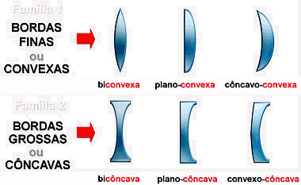
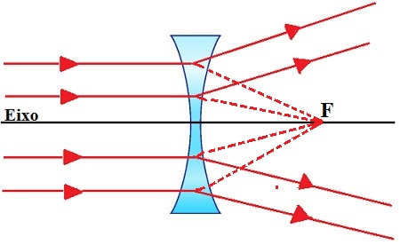
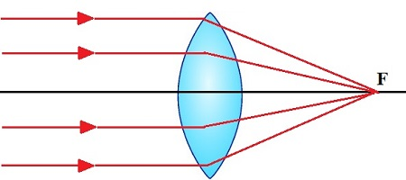
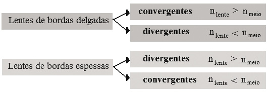

Sumário
Lentes Esféricas
Lentes são dispositivos ópticos que agem por refração da luz. São muito comuns em nosso cotidiano, principalmente em óculos, mas também em câmeras fotográficas, filmadoras, telescópios, lupas… Suas principais características são a transparência e a superfície esférica. São construídas normalmente em vidro ou plastico.
Baseado em sua curvatura as lentes são classificadas em lentes esféricas divididas
em bordas delgadas ou finas (Convexas) e bordas espessas ou grossas (Côncavas),
como mostra a imagem abaixo:

Classificação das Lentes quanto a sua borda
As Lentes também podem ser classificadas por seu comportamento
-
Comportamento divergente, quandos os raios de luz incidem paralelos ao
eixo principal e se espalham:

Comportamento Divergente dos Raios Luminosos
-
Comportamento convergente, quandos os raios de luz incidem paralelos ao
eixo principal e se concentram em um único ponto:

Comportamento Convergente dos Raios Luminosos
Classificação do comportamento de lentes
Existem formas de classificar as lentes de bordas delgadas e espessas como Convergente ou
Divergente. Para isso, vamos utilizar a imagem abaixo, nela há um esquema que indica
quando uma lente vai se comportar como convergente ou divergente. O valor n_{lente} ou
n_{meio} serão informados pela questão ou problema, mas como exemplo usaremos o do Ar (1)
e o do Vidro (1,5). Sendo assim, no caso de lentes com borda delgada, o valor de n_{lente}
(vidro = 1,5) é maior que o do meio (ar = 1), portanto é seu comportamento é convergente.
Já nas lentes com bordas espessas o comportamento será divergente.

Tabela que resume o comportamento das lentes
RESUMÃO
Chegou a hora de fazer o Resumão! Para isso, aqui vão algumas dicas para você fazer o seu de forma completa e saber tudo sobre os conceitos de Lentes Esféricas:
- Você precisa lembrar sobre a classificação das lentes, um método simples para saber se ela é Convexa ou Côncava, olha essa imagem, nela podemos ver que as lentes Convexas possuem sua parte arredondada para fora. Enquanto as Côncavas possuem sua parte arredondada para dentro.
- Quanto a tabela de comportamento, você pode fazer do seu estilo e ao fazer isso irá lembrar mais facilmente, decore e faça um esquema trabalhado. Mas lembre-se que sabendo o comportamento da lente Convexa você sabe o da Côncava, já que é o inverso.
Refêrencias
TodaMatéria - Lentes Esféricas
SóFísica - Óptica, Lentes Esféricas 1
SóFísica - Óptica, Lentes Esféricas 2
Brasil Escola - Lentes
SóFísica - Lentes Divergentes
SóFísica - Lentes Convergentes
Vídeo Youtube - Classificação das Lentes